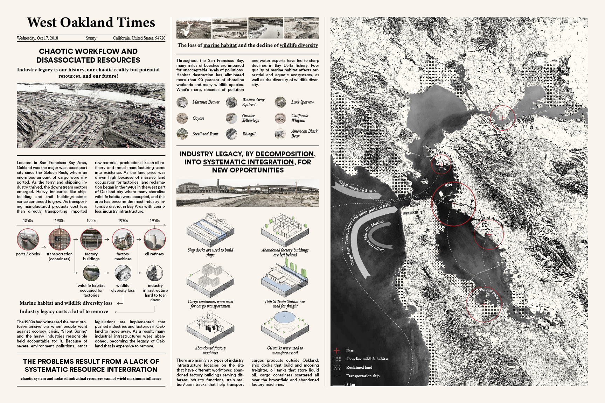
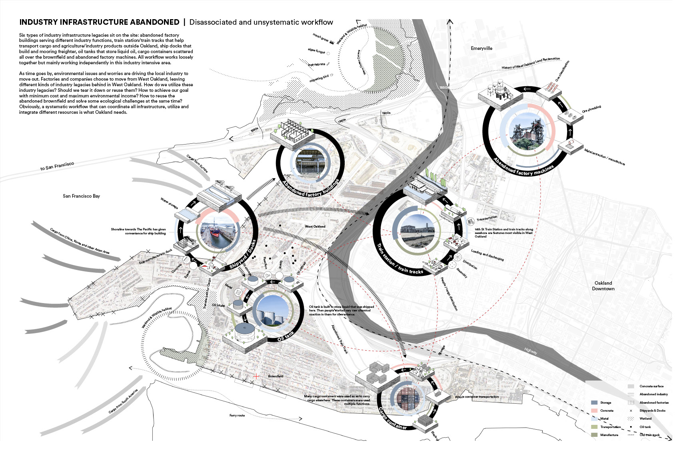
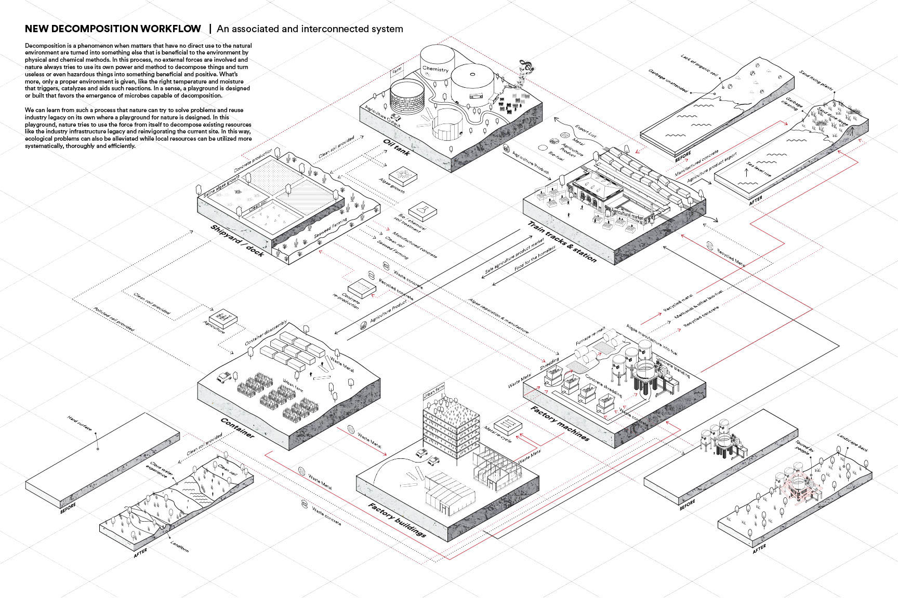
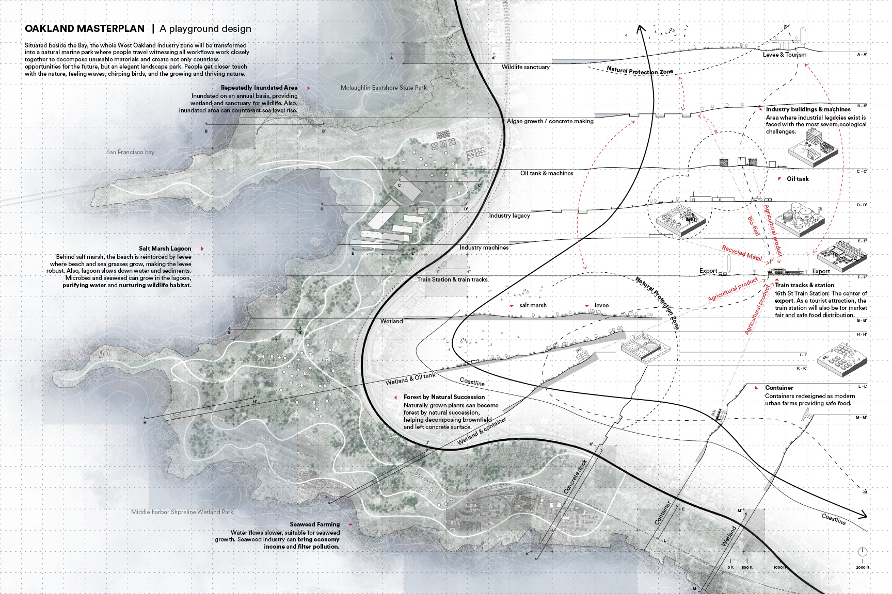
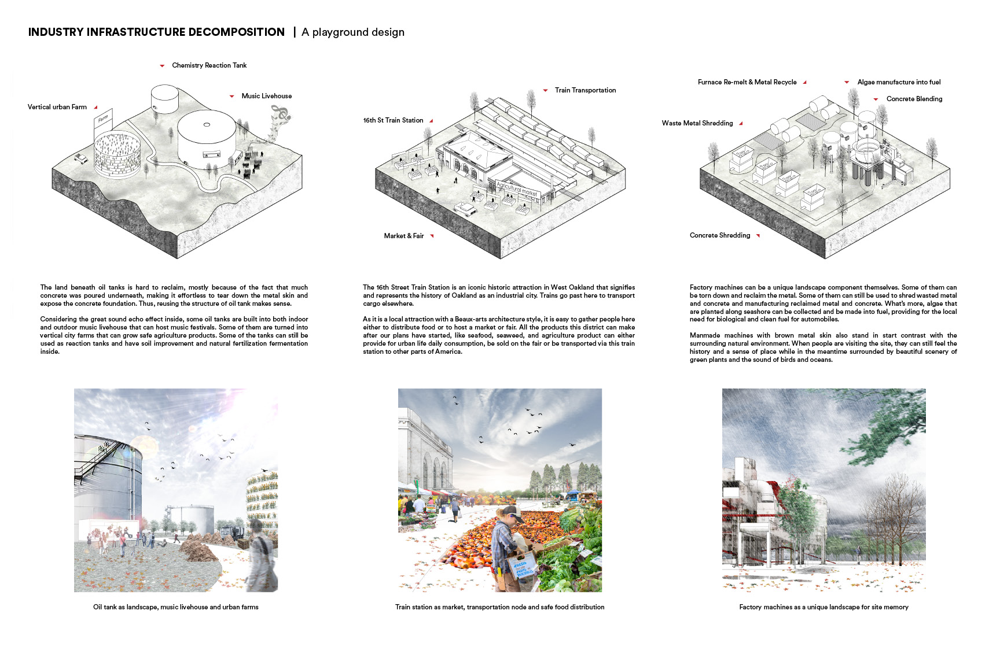
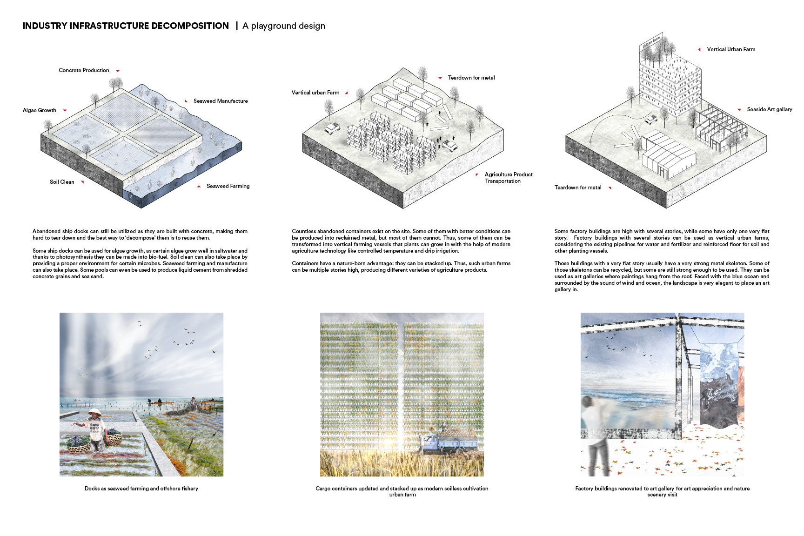

design background
West Oakland, a declining industrialized city

Located in San Francisco Bay Area, Oakland was one of the places where heavy industry was located. However, throughout the San Francisco Bay, many miles of beaches are impaired for unacceptable levels of pollutions. Decades of pollution and water exports have led to sharp declines in Bay Delta fishery. Poor quality of marine habitat affects terrestrial and aquatic ecosystems, as well as the diversity of wildlife diversity.
pain points
Industry infrastructure abandoned, with disassociated and unsystematic workflow

Six types of industry infrastructure legacies sit on the site: abandoned factory buildings serving different industry functions, train station/train tracks that help transport cargo and agriculture/industry products outside Oakland, ship docks that build and mooring freighter, oil tanks that store liquid oil, cargo containers scattered all over the brownfield and abandoned factory machines. All industries work loosely together but mainly working independently in this industry intensive area.
How do we utilize these industry legacies? Should we tear it down or reuse them? How to achieve our goal with minimum cost and maximum environmental income? How to reuse the abandoned brownfield and solve some ecological challenges at the same time? Obviously, a systematic workflow that can coordinate all infrastructure, utilize and integrate different resources is what Oakland needs.
experience mapping
Analysis on the workflow system

In this process, no external forces are involved and nature always tries to use its own power and method to decompose things and turn useless or even hazardous things into something beneficial and positive. In this way, ecological problems can also be alleviated while local resources can be utilized more systematically, thoroughly and efficiently.
design strategies: plan
Oakland masterplan

Situated beside the Bay, the whole West Oakland industry zone will be transformed into a natural marine park where people travel witnessing all workflows work closely together to decompose unusable materials and create not only countless opportunities for the future, but an elegant landscape park. People get closer touch with the nature, feeling waves, chirping birds, and the growing and thriving nature.
design strategies
Strategies #1

Strategies #2
